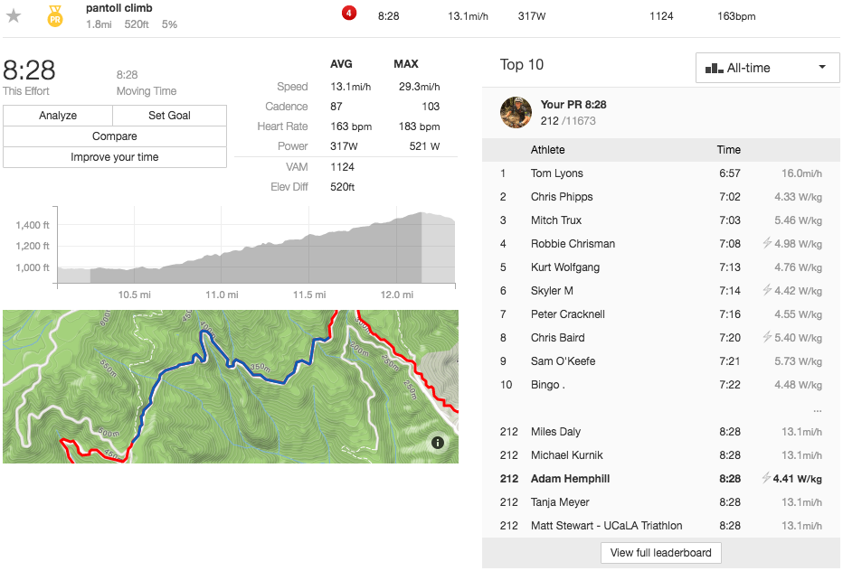

W/kom for Strava

Functionality
This userscript displays measured or estimated watts per kilogram (W/kg) for activity segment leaderboards (e.g. https://www.strava.com/activities/643122549/segments/15718362409). To respect Strava, it works only on…
Requirements
- ECMAScript 2015-compatible browser
- Interwebs
- Watts
Caveats (TODO)
- Not triggered by a listener — requires manual invocation of wkomForStrava()
- Logs an error for all 11 GETs if the segment is flagged as downhill
- Displays results as they are fetched rather than all at once
- Works only on activity pages